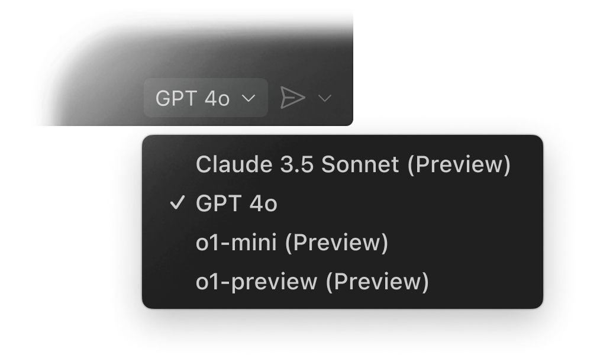
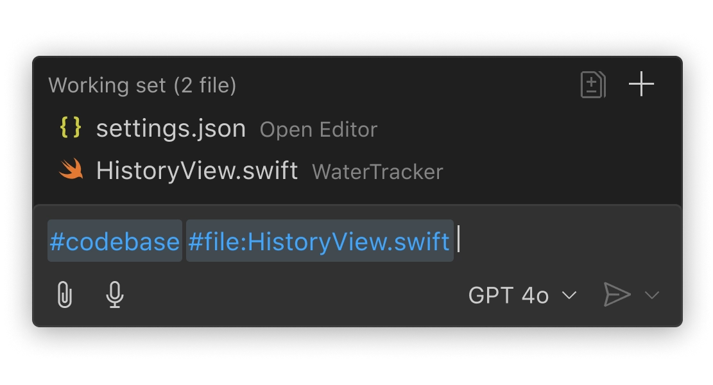
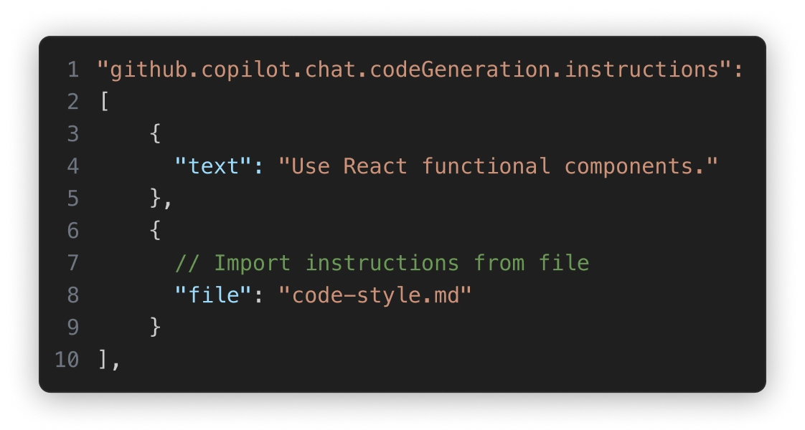

Choose the model that works for you
Pick the model that works best for your project and team, including GPT 4o and Claude Sonnet.

An expert on your codebase
Copilot locally indexes your codebase to understand what’s relevant and supplements that context to interactions with Copilot.

Personalized to your needs
Copilot works the way you do. Customize Copilot's prompts with details about your team's workflows, tools, and projects.
